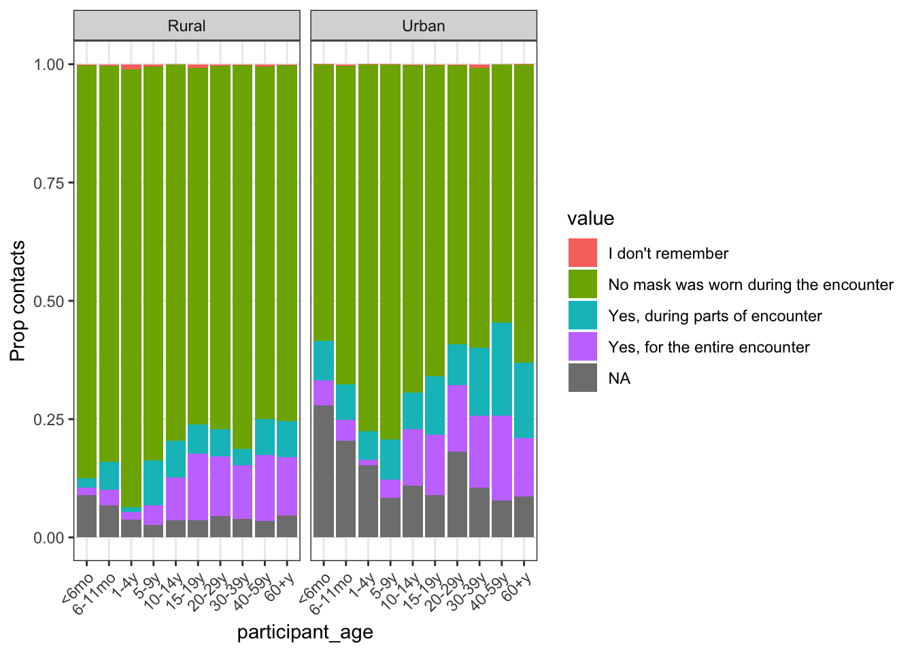
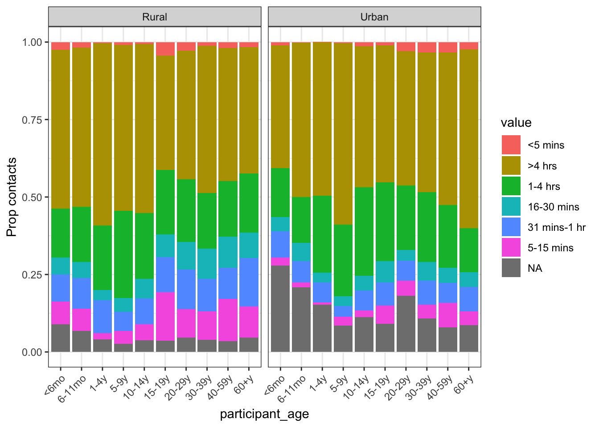
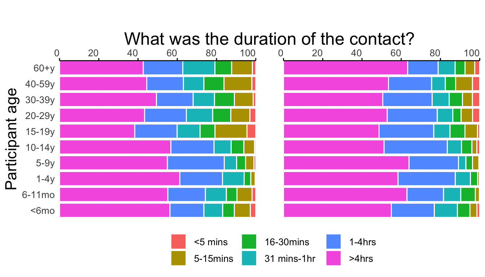
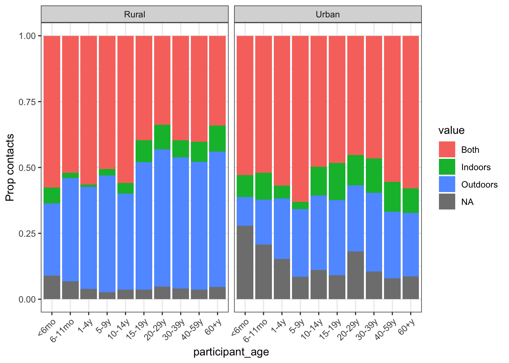

| Overall, N = 1,4521 | Site | ||
|---|---|---|---|
| Rural, N = 7301 | Urban, N = 7221 | ||
| Sex | |||
| Female | 721 (50%) | 360 (49%) | 361 (50%) |
| Male | 729 (50%) | 369 (51%) | 360 (50%) |
| Age | |||
| <6mo | 152 (10%) | 73 (10%) | 79 (11%) |
| 6-11mo | 157 (11%) | 86 (12%) | 71 (10%) |
| 1-4y | 185 (13%) | 101 (14%) | 84 (12%) |
| 5-9y | 122 (8%) | 64 (9%) | 58 (8%) |
| 10-14y | 126 (9%) | 62 (8%) | 64 (9%) |
| 15-19y | 124 (9%) | 64 (9%) | 60 (8%) |
| 20-29y | 125 (9%) | 64 (9%) | 61 (8%) |
| 30-39y | 125 (9%) | 64 (9%) | 61 (8%) |
| 40-59y | 209 (14%) | 89 (12%) | 120 (17%) |
| 60+y | 127 (9%) | 63 (9%) | 64 (9%) |
| able to read and write | 728 (50%) | 300 (41%) | 428 (59%) |
| Currently enrolled in school | 371 (40%) | 176 (39%) | 195 (41%) |
| Current school level | |||
| None | 2 (1%) | 1 (1%) | 1 (1%) |
| Primary | 199 (53%) | 111 (63%) | 88 (45%) |
| Secondary | 165 (44%) | 64 (36%) | 101 (52%) |
| College | 4 (1%) | 1 (1%) | 3 (2%) |
| Bachelors or more | 2 (1%) | 0 (0%) | 2 (1%) |
| Highest education level attained | |||
| None | 82 (14%) | 67 (23%) | 15 (5%) |
| Primary | 302 (53%) | 143 (50%) | 159 (57%) |
| Secondary | 175 (31%) | 72 (25%) | 103 (37%) |
| College | 0 (0%) | 0 (0%) | 0 (0%) |
| Bachelors or more | 8 (1%) | 4 (1%) | 4 (1%) |
| Occupation | |||
| Unemployed | 167 (19%) | 99 (23%) | 68 (15%) |
| Student | 325 (37%) | 154 (35%) | 171 (38%) |
| Homemaker | 0 (0%) | 0 (0%) | 0 (0%) |
| Casual laboror | 78 (9%) | 22 (5%) | 56 (12%) |
| Farmer | 71 (8%) | 65 (15%) | 6 (1%) |
| Fishing | 2 (0%) | 2 (0%) | 0 (0%) |
| Business person | 70 (8%) | 7 (2%) | 63 (14%) |
| Office worker | 85 (10%) | 27 (6%) | 58 (13%) |
| Retired | 20 (2%) | 5 (1%) | 15 (3%) |
| Other | 72 (8%) | 58 (13%) | 14 (3%) |
|
1
n (%)
|
|||
Globalmix Mozambique analysis
Background
This is a summary of results from analysis of GlobalMix data collected in Mozambique. The project had two aims: 1. quantify social contact patterns among individuals data using paper diaries 2. quantify social contact patter within households using paper diaries and wearable proximity sensors
This analysis focuses on aim 1 only. Data were collected from Manhica (rural site) and Polana Canhico (urban site) between April 2020 and April 2021. Individuals were identified from the health and demographic surveillance system available in each site. Participants were stratified into 10 age groups (<6 months, 6-11 months, 1-4 years, 5-9 years, 10-14, 15-19, 20-29, 30-39, 40-59 and 60+ years) with a target of 63 individuals per age strata.
Results
Baseline summary
Characteristics of contacts reported
| Overall, N = 23,3231 | Rural, N = 13,1221 | Urban, N = 10,2011 | |
|---|---|---|---|
| rec_id | 1,114 (519, 1,863) | 932 (459, 1,448) | 1,889 (580, 2,108) |
| Contact age | |||
| <6mo | 234 (1%) | 150 (1%) | 84 (1%) |
| 6-11mo | 285 (1%) | 178 (1%) | 107 (1%) |
| 1-4y | 917 (4%) | 572 (4%) | 345 (3%) |
| 5-9y | 1,832 (8%) | 1,222 (10%) | 610 (6%) |
| 10-14y | 5,094 (22%) | 3,166 (25%) | 1,928 (19%) |
| 15-19y | 2,943 (13%) | 1,652 (13%) | 1,291 (13%) |
| 20-29y | 2,887 (13%) | 1,219 (10%) | 1,668 (17%) |
| 30-39y | 3,284 (14%) | 1,657 (13%) | 1,627 (16%) |
| 40-59y | 3,785 (17%) | 2,122 (17%) | 1,663 (17%) |
| 60+y | 1,530 (7%) | 821 (6%) | 709 (7%) |
| Contact sex | |||
| Female | 12,476 (54%) | 7,242 (55%) | 5,234 (51%) |
| Male | 10,803 (46%) | 5,856 (45%) | 4,947 (49%) |
| Is this a member of your household? | |||
| Member | 11,062 (47%) | 5,288 (40%) | 5,774 (57%) |
| Non-member | 12,261 (53%) | 7,834 (60%) | 4,427 (43%) |
| Was the mask wearing a contact? | |||
| No mask was worn during the encounter | 17,111 (80%) | 10,523 (84%) | 6,588 (74%) |
| Yes, for the entire encounter | 2,318 (11%) | 1,200 (10%) | 1,118 (13%) |
| Yes, during parts of encounter | 1,965 (9%) | 788 (6%) | 1,177 (13%) |
| I don't remember | 78 (0%) | 57 (0%) | 21 (0%) |
| How long have you known this contact? | |||
| Never met before | 599 (6%) | 326 (6%) | 273 (6%) |
| <1 yr | 1,639 (17%) | 897 (18%) | 742 (16%) |
| 1-2 yrs | 805 (8%) | 470 (9%) | 335 (7%) |
| 3-5 yrs | 1,235 (13%) | 817 (16%) | 418 (9%) |
| 6-10 yrs | 1,721 (18%) | 907 (18%) | 814 (17%) |
| >10 yrs | 3,788 (39%) | 1,632 (32%) | 2,156 (46%) |
| How long did the contact last? | |||
| <5 mins | 426 (2%) | 244 (2%) | 182 (2%) |
| 5-15 mins | 1,583 (7%) | 1,157 (9%) | 426 (5%) |
| 16-30 mins | 1,418 (7%) | 927 (7%) | 491 (6%) |
| 31 mins-1 hr | 2,033 (9%) | 1,349 (11%) | 684 (8%) |
| 1-4 hrs | 4,877 (23%) | 2,667 (21%) | 2,210 (25%) |
| >4 hrs | 11,115 (52%) | 6,216 (49%) | 4,899 (55%) |
| How many times do you have a contact with this person? | |||
| Never met before | 679 (3%) | 403 (3%) | 276 (3%) |
| Rarely | 754 (4%) | 452 (4%) | 302 (3%) |
| Daily or almost daily | 16,878 (79%) | 9,726 (77%) | 7,152 (80%) |
| 1-3 times per week | 2,364 (11%) | 1,429 (11%) | 935 (11%) |
| Once every 2 weeks | 469 (2%) | 320 (3%) | 149 (2%) |
| Once per month | 239 (1%) | 181 (1%) | 58 (1%) |
| Once every 3 months | 68 (0%) | 48 (0%) | 20 (0%) |
| Where did the contact occur? | |||
| Indoors | 1,779 (8%) | 756 (6%) | 1,023 (12%) |
| Outdoors | 8,375 (39%) | 5,867 (47%) | 2,508 (28%) |
| Both | 11,300 (53%) | 5,936 (47%) | 5,364 (60%) |
|
1
Median (IQR); n (%)
|
|||
Contact behavior



